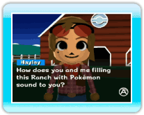
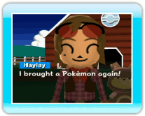

|
8
|
Cómo empezar y guardar
|
 |
|
Empezar un juego (día 1)
Si es la primera vez que juegas a My Pokémon Ranch,
una guardiana llamada Hayley te explicará cómo funciona. Solamente
tienes que oprimir Empezar un juego (día 2 o posterior)
El juego comienza con la introducción que hace Hayley de los
Pokémon que ha traído ese día. Si cumples los requisitos previos, el
nivel de la granja aumentará. El tiempo en My Pokémon
Ranch
En la granja, el color del cielo cambia dependiendo de la
mañana al mediodía, de mediodía a la tarde, y de la tarde a la
noche, aproximadamente cada 15 minutos.  Cómo guardar Cómo guardarLos datos del juego se guardan automáticamente. Nota: Cómo evitar que los datos guardados de My Pokémon Ranch se borren. Las siguientes acciones podrían dañar o hacer que se pierdan los datos del juego. Los datos del juego perdidos no pueden ser recuperados.
|
 para continuar.
para continuar. |
 |
 |